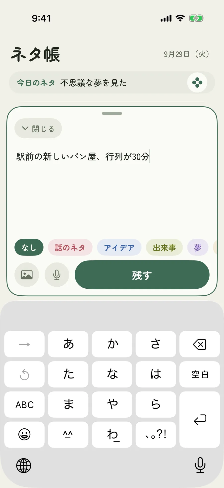
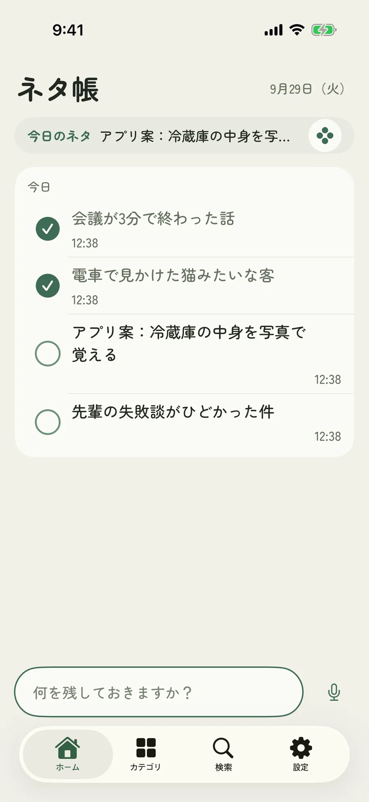
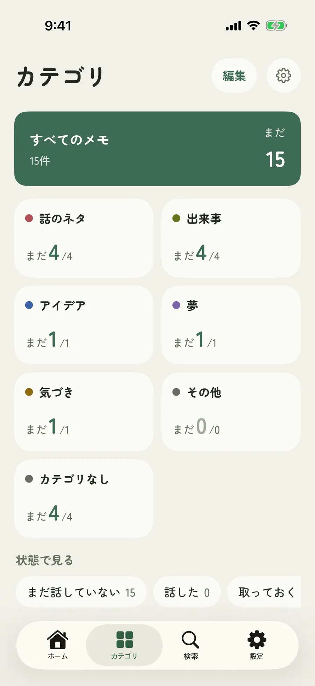
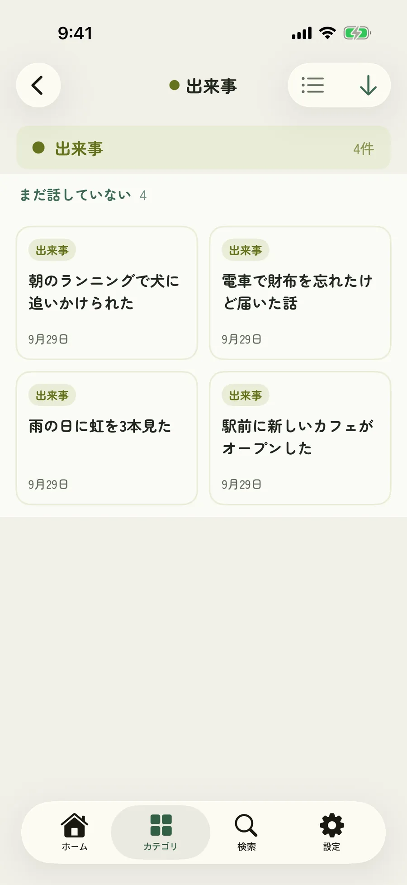
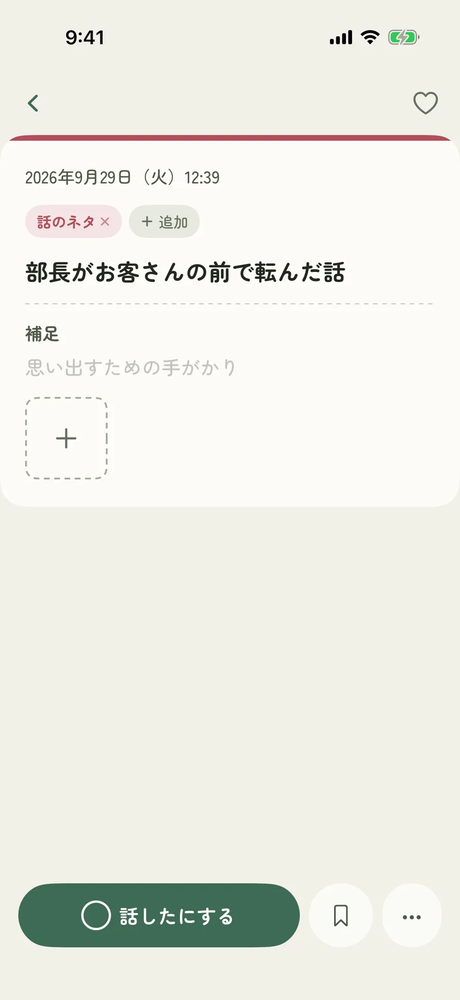

ネタ帳は、思いついた出来事、話したい話題、アイデアや気づきを、忘れる前にひとことで残すためのメモアプリです。
芸人のネタ帳のように、日常の小さな発見や会話の話題を短い言葉でためておき、必要なときにすぐ取り出せます。長い文章を書く必要はありません。自分が後から思い出せる、ひとことだけで十分です。





ホーム画面のいちばん下に、「何を残しておきますか？」という入力欄があります。タップして、思いついたことを短く書きましょう。詳しい説明は必要ありません。
例：「先週の電車で見かけた猫のリュック」「Aさんに話す → 先月の温泉旅行」「アプリ案：歩数で木が育つやつ」
入力したら「残す」を押すだけです。入力パネルを開いたまま、続けて次のメモを書けます。パネルは下にスワイプすると閉じられます。保存したメモは、ホームの一覧のいちばん下に追加されます。
入力パネルに並ぶカテゴリを押すと、カテゴリを設定できます。写真のボタンから写真も添付できます。どちらも任意で、あとから変えることもできます。
マイクのボタンを押すと、話した内容がそのまま文字になります。初回は「マイク」と「音声認識」の許可が必要です。設定アプリ →「ネタ帳」から許可できます。
下の「カテゴリ」タブを開くと、カテゴリごとに「まだ話していない数」が表示されます。気になるカテゴリを開けば、まだ話していないネタが上に並びます。すべてのカテゴリをまとめて見たいときは「すべてのメモ」を開きます。ホーム上部の「今日のネタ」には、まだ話していないメモから1件がランダムに表示されます。
一覧で、話したメモの左の丸を押しましょう。「話した」に切り替わり、一覧の下のほうへ移ります。削除する必要はありません。記録として残ります。間違えて押したときは、もう一度押せば元に戻ります。
起動したらすぐ書ける。ひとことだけで保存できます。
マイクのボタンで話すだけ。移動中の記録に。
ライブラリまたはカメラから、1つのメモに最大5枚まで。
一覧の丸を押すだけで状態が切り替わります。
2列のカードに、まだ話していない数と総数を表示。
一覧の表示を切り替えられます。前回の表示を覚えています。
メモの画面を左右にスワイプすると、前後のメモへ。
まだ話していないメモから1件をランダムに表示。
カテゴリで絞り込みながら、キーワードで探せます。
お気に入りのメモは、各一覧の先頭に表示されます。
自由に追加でき、8色から色を選べます。複数のカテゴリも付けられます。
「準備中」のような状態を自分で追加できます。
ホーム画面から声でメモを残せます。まだ話していない数も表示。
設定からメモをテキスト形式で書き出せます。
システムの設定に合わせて自動で切り替わります。
メモには、次の状態があります。状態を使って、「まだ使っていない話題」と「話した話題」を区別できます。
保存した直後の状態です。カテゴリを開くと、いつも一覧の上に並びます。飲み会や会話の前のチェックに使いましょう。
会話では使わないけれど、大切な記録として残しておきたいメモに使います。思い出や気づきなど、個人的な記録に向いています。
「準備中」のように、自分で状態を追加できます。「カテゴリ」タブの「編集」から追加・名前の変更・並べ替えができます。
実際に会話で使ったメモの状態です。一覧の下のほうに移りますが、削除はされません。いつでも振り返れます。
カテゴリ内の一覧では、「まだ話していない」→「取っておく」→ 独自の状態 →「話した」の順に、いつも同じ順番で並びます。お気に入りのメモは、それぞれの中で先頭に表示されます。
一覧の左の丸を押すと「話した」に切り替わります。もう一度押すと元に戻ります。そのほかの状態に変えるときは、メモを開き、画面の下にあるボタンから選びます。
メモはカテゴリで分類できます。カテゴリは任意で、設定しなくても保存できます。1つのメモに複数のカテゴリを付けることもできます。
最初から用意しているカテゴリは次の6つです。
カテゴリは自由に追加でき、赤・青・紫・オリーブ・黄土・青緑・茶・グレーの8色から色を選べます。追加や色の変更は、「カテゴリ」タブの「編集」から行えます。
「カテゴリ」タブでは、カテゴリがメモの多い順に自動で並びます。メモにカテゴリを付けるには、入力パネルに並ぶカテゴリを押すか、メモを開いてカテゴリを押します。